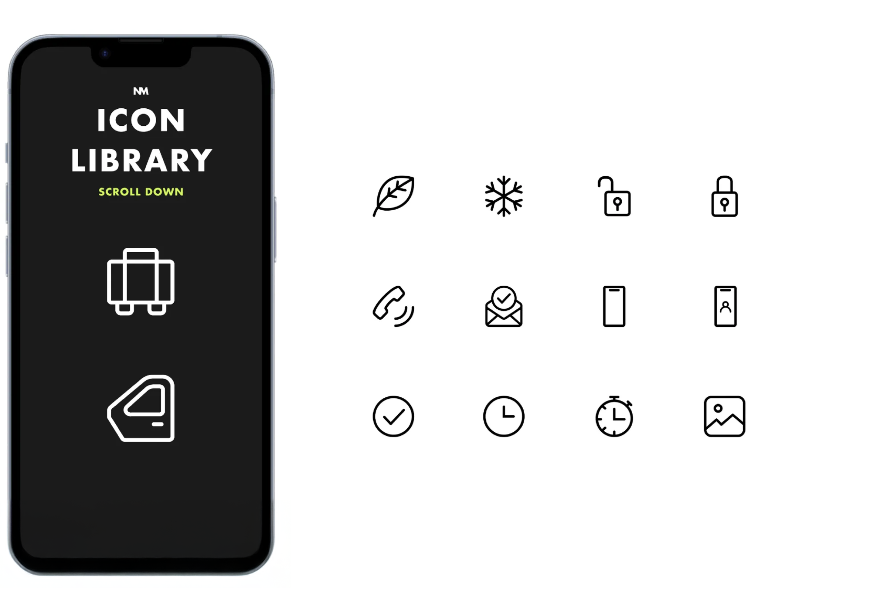

#in-house
Iconography
Task: Design New Icon Library
Role: Design Lead
Tools: Illustrator, Figma

My Figma Icon Library (password on request)
My Icons on Dribble
Framing the Problem
There was a need to redesign our icon set to align more clearly with our brand's evolving visual identity.
Key Challenges
- Develop a consistent icon design language
- Design scalable icons across web and native platforms
- Give developers easy access to the icon library
In the development of our visual design language at ABG, previous designers had used a mix of out-of-the-box icon libraries. This resulted in a lack of consistency in the brand's icons due to the varying styles across different libraries.
This challenge presented an opportunity to enhance the consistency and readability of our icons, especially when used at different scales across web and app experiences.
How I Made the Icons
To start, I created the icons in Adobe Illustrator, adhering to design guidelines and using 24 x 24px grids. This grid system ensures consistent icon design by placing end-nodes of lines only where horizontal and vertical pixel lines intersect.
I then transferred each icon into Adobe XD to build a comprehensive icon library. This library contained over 100 custom-made icons, complete with an external link for developers to download each icon at the required scale and format directly from their browser during our product sprints. This streamlined process was a significant improvement over the previous method of sending assets via email.
Why Scalability?
A key improvement over the out-of-the-box icons was the use of consistent stroke size (1.5px), rounded caps, and SVG format, which allows for better scalability and image sharpness.
Six Reasons for SVG and Scalability:
- Improved icon sharpness across devices compared to older PNG icons
- Performance optimization due to smaller SVG file sizes and fewer HTTP requests
- Consistency across devices ensures a uniform visual experience at different sizes
- Scalable icons remain effective on future devices
- Better accessibility as SVG icons can be adjusted for users with visual impairments
- Simplifies updates and reduces design inconsistencies by maintaining a single scalable icon file
The 24px square serves as the master icon size, with fringe cases below 16px or above 24px requiring custom designs. The minimum icon size is 8px, and the maximum is 48px.
Before, After, and Implementation
To ensure a smooth transition for end-users, I opted for a gradual update approach. Before the refresh, icons were inconsistent with varying styles and stroke sizes. After the refresh, the icons featured a consistent stroke size, unified design language, and improved scalability.
I introduced the updated icons gradually, changing a few with each sprint release. This allowed users to adapt incrementally, maintaining familiarity while enhancing the overall look and feel. For most icons, I retained the original visual metaphor to ensure recognizability while introducing a refreshed style.
Improvements and Next Steps
Since building the original Adobe XD icon library, I have migrated over 130 icons into a new and improved shared Figma design system. This includes sets of 16 x 16px icons for native platforms and 24 x 24px icons for web.
In the future, I plan to create micro-animations between inactive and active states using Lottie animations, built in Adobe After Effects, to bring delight to users.